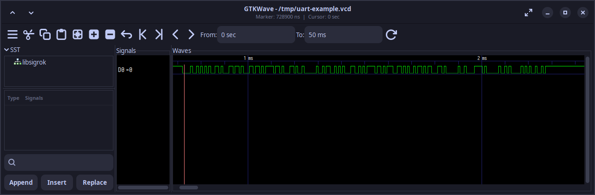
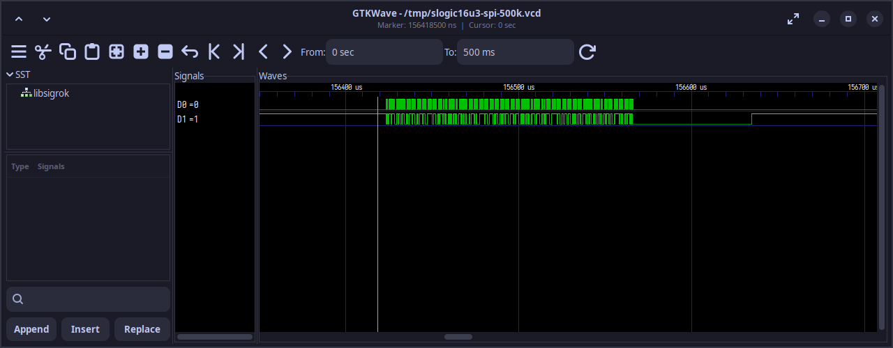

中文
中文用 Agent 操作 SLogic：Plugin 快速开始
更新历史
| 日期 | 版本 | 作者 | 更新内容 |
|---|---|---|---|
| 2026-08-05 | v0.2 | taorye |
|
安装 sigrok-cli-slogic-plugin 后，无需学习 PulseView。接好逻辑分析仪，把通道、协议和任务目标告诉支持 Plugin 或 Skill 的 Agent，它便能调用 sigrok-cli 扫描设备、采集 .sr 波形，并通过 libsigrokdecode 解码。例如：
SLogic 的 D0 接了 UART RX，参数是 115200 8N1。请先扫描设备，再用 10 MHz 采集 50 ms，保存原始波形并解码收到的字符。
开始前，请先确认信号电压和电气安全，见下文「连接 SLogic 前」。
适用型号
Sipeed 当前的 SLogic Series 包括：
| 产品 | 说明 |
|---|---|
| SLogicCombo8 | 产品介绍 |
| SLogic16U3 | 产品介绍 |
| SLogic32U3 | 内测中，待发售 |
不同型号的通道数量、采样率、输入范围和配置项有所不同。使用本教程时，应先让 Agent 扫描设备并读取当前型号的能力，再设置采集参数。
本文已在 Linux x86_64 上使用 SLogicCombo8 和 SLogic16U3 完成采集验证；Windows 和 macOS 的发布版二进制、USB 驱动和硬件采集尚未验证。
使用流程总览
- 安装 Plugin：把 plugin 链接发给 Agent，由它完成安装；
- 准备 SLogic 版
sigrok-cli：让 Agent 下载并验证可执行文件； - 连接 SLogic 前：确认硬件模式、接线安全和 USB 权限；
- 第一次连接：只扫描设备并读取能力，不采集；
- 描述采集需求：明确通道、采样率和采集上限，采集
.sr波形； - 解码分析：指定 decoder、引脚映射和选项，验收结果。
已有 .sr 波形文件时，可直接从第 6 步开始，无需连接设备。
Plugin 能做什么
sigrok-cli-slogic-plugin 是一个仅包含 Skill 的 OpenAI plugin，内置 Skill 名为 sigrok-cli-slogic。其能力对应包装脚本的以下操作：
| 操作 | 说明 |
|---|---|
scan |
扫描设备，只列出名称包含 SLogic 或 DSLogic 的匹配项 |
show |
读取所选设备的通道和配置能力 |
capture |
按时长、样本数或帧数进行有限采集，并将波形保存为 .sr |
decoder-show |
查询 libsigrokdecode decoder 的必选/可选引脚、选项和解码标注（annotation） |
decode |
使用明确的 decoder 引脚映射和选项解码已有 .sr 文件 |
decode --stack |
在基础 decoder 上依次叠加高层 decoder，例如在 I²C 上叠加 eeprom24xx |
capture -- ... |
将通道、采样率、触发等额外采集参数传给 sigrok-cli |
run -- |
将包装脚本未覆盖的操作直接传给 sigrok-cli |
Skill 的行为约定：
- 扫描不到匹配设备时停止，不进入采集；扫描到多台设备时，必须先指定其中一台；
- 采集完成后，Agent 应返回
.sr的绝对路径和实际命令； - 解码完成后，Agent 应报告 decoder、引脚映射、选项以及是否产生 annotation；
- 解码已有的
.sr文件无需连接逻辑分析仪；只有扫描、查询设备和采集需要访问 USB 设备。
Plugin 不附带 MCP server、网络服务、sigrok-cli、USB 驱动或 GTKWave。Plugin 也不能预测协议：协议或接线未知时，由大模型结合波形特征和电路信息推测候选协议，经用户确认后，Skill 再按指定的 decoder 和引脚映射执行解码，见下文「不知道协议或接线」。
安装 Plugin
Plugin 需要 Python 3.10 或更高版本，并要求 Agent 能运行本地命令、读写工作目录和访问 USB 设备。
无需手动下载、解压或复制目录。复制 sigrok-cli-slogic-plugin 的链接地址，直接发给支持 Plugin 的 Agent：
请安装这个 SLogic plugin：
https://dl.sipeed.com/fileList/SLogic/sigrok-cli-slogic-plugin.zip。安装完成后检查sigrok-cli-slogic是否已经加载，并告诉我是否需要重启。暂时不要访问 USB 设备或开始采集。
按 Agent 的提示重启后，再说：
检查
sigrok-cli-slogic是否已经加载。说明它能执行哪些操作，暂时不要访问 USB 设备或开始采集。
Agent 能识别 $sigrok-cli-slogic，并说明 scan、show、capture 和 decode 的用途，即表示 Skill 已加载。
准备 SLogic 版 sigrok-cli
SLogic 将按平台预分发对应的 sigrok-cli：
| 系统 | 分发文件 |
|---|---|
| Linux | sigrok-cli-SLogic-xxxx.AppImage |
| Windows | sigrok-cli-SLogic-xxxx.exe |
| macOS | sigrok-cli-SLogic-xxxx.dmg |
把 SLogic 下载站 交给 Agent，让它下载适合当前系统的最新版，并保存到固定的工具目录。<工具目录> 填写你希望长期保存该工具的位置即可：
打开 SLogic 下载站 (https://dl.sipeed.com/shareURL/SLogic) ，识别当前操作系统，下载对应的最新版
sigrok-cli-SLogic，并保存到<工具目录>。不要覆盖已有版本。请完成运行该程序所需的准备工作，把可执行文件绝对路径保存到全局配置，供sigrok-cli-slogic后续直接使用，再运行版本检查和decoder-show uart。告诉我配置结果，不要扫描设备或开始采集。
Agent 验证可执行文件后，应将其路径保存到全局配置，供后续扫描、采集和解码直接使用。不同系统的分发形式由 Agent 处理，用户无需记录路径或了解发行包的内部结构。
连接 SLogic 前
确认硬件模式和接线安全
- SLogicCombo8 支持多种工作模式。用作逻辑分析仪时，先按键切换至蓝色指示灯；Linux 下可用
lsusb检查是否出现USB TO LA。 - 逻辑分析仪 GND 必须与被测设备 GND 可靠连接。地线应尽量短，并靠近待测信号点。
- 连接前须确认被测信号电压处于对应 SLogic 型号的输入范围内。电压未知时，先用万用表或示波器测量。
- SLogic16U3 的 VCC 是 3.3 V 电源输出，不是信号输入。
- 逻辑分析仪通过 USB 与电脑共地。测量强电系统或不能与电脑共地的设备时，应使用合适的 USB 隔离器。无法确认安全条件时，请勿连接。
不同型号的输入范围、阈值和引脚定义不完全相同，连接前请查阅对应产品页。本教程的 UART 示例只使用 D0 和 GND。
配置 Linux USB 权限
普通用户无法扫描设备时，可安装以下 udev 规则：
sudo tee /etc/udev/rules.d/60-sipeed.rules <<'EOF'
SUBSYSTEM!="usb|usb_device", GOTO="sipeed_rules_end"
ACTION!="add", GOTO="sipeed_rules_end"
ATTRS{idVendor}=="359f", MODE="0666", GROUP="plugdev", TAG+="uaccess"
ENV{ID_MM_DEVICE_IGNORE}="1"
LABEL="sipeed_rules_end"
EOF
sudo udevadm control --reload
sudo udevadm trigger
Arch Linux 可将 GROUP="plugdev" 改为 GROUP="uucp"。规则生效后，重新插拔 SLogic，再让 Agent 扫描。使用 sudo 运行程序只适合快速判断权限问题，不建议作为日常方案。
第一次连接：只扫描，不采集
连接 SLogic 后，先扫描并读取设备能力，不要直接采集：
使用
$sigrok-cli-slogic和已经配置好的 SLogic 版sigrok-cli。扫描已连接的 SLogic，再读取所选设备的能力。不要采集。报告设备标识、通道、可用采样率和配置项。
Agent 应依次完成：
- 确认全局配置中的
sigrok-cli路径存在且可执行； - 扫描 SLogic/DSLogic；
- 只有一台设备时读取该设备能力；
- 有多台设备时列出完整设备标识（scan spec），等待用户选择；
- 没有设备时停止，不进入采集。
扫描完成后，至少核对以下内容：
| 项目 | 为什么需要 |
|---|---|
| 完整设备标识 | 多台设备时用于选定目标 |
| 通道名称 | decoder 引脚必须映射到实际通道 |
| 可用采样率 | 采集值必须是设备支持的配置 |
| 通道和带宽限制 | 启用通道越多，可用最高采样率通常越低 |
| 配置项 | 电压阈值、触发等能力取决于具体型号 |
采集参数应以当前设备的 show 输出为准，不能直接套用其他 SLogic 型号的参数。
采集前怎样描述需求
每次采集都应设置明确上限，时长、样本数和帧数三选一。如果均未指定，Plugin 默认采集 1000 ms；实际使用时仍建议主动写明上限。
| 信息 | 应该怎样说明 |
|---|---|
| 目标设备 | 指定型号或扫描结果中的完整标识 |
| 接线 | 说明每根协议线连接到哪个 D 通道 |
| 预期协议 | UART、I²C、SPI 或其他 decoder ID |
| 协议参数 | 波特率、SPI mode、位序、CS 极性等 |
| 采样范围 | 时长、样本数或帧数三选一 |
| 采样率 | 使用设备支持的值；不知道时先让 Agent 建议 |
| 输出文件 | 使用文件名，例如 uart-test.sr |
| 结果目标 | 字符、地址、数据、warning、样本位置或波形图 |
采样时间、样本数和采样率的关系是：
采样时间（秒） = 样本数 ÷ 采样率（Hz）
例如，以 10 MHz 采集 500000 个样本，对应 50 ms。SLogic 产品文档建议采样率高于被测信号频率约 10 倍；实际选择还要考虑信号质量、协议 decoder 和设备带宽。无关通道会占用 USB 带宽，因此只应启用本次采集所需的通道。
如果不知道采样率，可以说：
D0 上预计是 115200 baud UART，但我不知道该选哪个采样率。请先读取设备支持的采样率，给出选择依据，等我确认后再采集。
如果协议参数也不确定，请分别列出已知项和未知项。Agent 应先补齐必要信息，不应遍历尝试所有协议和参数。
完整示例：采集并解码 UART
下面以 SLogicCombo8 采集 CH341 TX 为例。UART 参数为 115200 8N1、LSB first，信号接入 D0。
接线
CH341 TX -> SLogicCombo8 D0
CH341 GND -> SLogicCombo8 GND
这里采集的是 CH341 发出的 TX 信号。对于 UART decoder，这一路是逻辑分析仪接收到的数据，因此映射为 rx=D0。
先确认设备和参数
使用
$sigrok-cli-slogic。SLogicCombo8 已切换到蓝灯逻辑分析仪模式，D0 接 CH341 TX，双方 GND 已连接。请扫描设备，确认 D0 和 10 MHz 采样率可用；只检查，不采集。
核对 scan 和 show 的结果后，再开始采集。
采集原始波形
使用刚才确认的 SLogicCombo8，只启用 D0，以 10 MHz 采集 500000 个样本，保存为
capture-combo8-500k.sr。不要覆盖已有文件；如果同名文件存在，先停止并告诉我。完成后报告绝对路径和实际命令。
本次采集参数如下：
- 通道：D0；
- 采样率：10 MHz；
- 样本数：500000；
- 对应时长：50 ms；
- 输出：当前工作目录中的
capture-combo8-500k.sr。
--output 只接受当前目录中的文件名，不能使用绝对路径或子目录。未指定文件名时，Plugin 会生成带时间戳的 .sr 文件。
解码 UART
解码
capture-combo8-500k.sr。先查询 UART decoder 支持的 pin、option 和 annotation，然后将rx映射为 D0，使用 115200 baud、8 data bits、no parity、1 stop bit、LSB first。输出 RX 字符、warning 和样本位置，并将文本保存为decoded-uart.txt。
Agent 应返回：
- decoder：UART；
- decoder 引脚映射：
rx=D0； - 波特率、数据位、校验、停止位和位序；
- 是否产生解码标注；
- 解码文本和警告（warning）；
- 输入、输出文件的绝对路径；
- 实际执行的命令。
实测数据每 10 ms 发送一次 Hello, SLogic x AI。50 ms 波形中完整解码出 5 次消息、90 个字符，warning 为 0。
需要时再生成波形图
协议内容以 decoder 文本为准，通常无需生成图片。GTKWave 是可选配套工具，不是 Plugin 的运行依赖。系统已安装 GTKWave 时，可以继续说：
将
capture-combo8-500k.sr的 D0 转换为 VCD，用 GTKWave 截取第一组完整 UART 消息并保存为 PNG。不要修改原始.sr。
sigrok-cli 负责将 .sr 导出为 VCD，GTKWave 只显示数字电平。VCD 不包含 libsigrokdecode 生成的 UART 字符标注，字符内容仍以 decoded-uart.txt 为准。

完整示例（触发）：采集并解码 SPI
解码 SPI 需要明确时钟、数据线、模式和位序。是否映射 CS，取决于采集时是否接入了有效的 CS 信号。
下面的实例使用 CH341 发送 SPI 数据，并由 SLogic16U3 采集：
CH341 CLK -> SLogic16U3 D0
CH341 MOSI -> SLogic16U3 D1
CH341 CS -> SLogic16U3 D3
CH341 GND -> SLogic16U3 GND
发送端通过 /dev/spidev1.0，以 SPI mode 0、500 kHz、8 bit 运行发送脚本（本例为 spi_test.py），发送 24 字节：
hello, SLogic from SPI.\n
采集和发送需要并行执行：Agent 应先启动采集并等待 D3 触发，再运行发送脚本。先对 Agent 说明采集参数：
使用
$sigrok-cli-slogic操作已连接的 SLogic16U3。D0 接 CLK，D1 接 MOSI，D3 接 CS，双方 GND 已连接。请只启用 D0、D1 和 D3，以 10 MHz 采集 1000 ms，并设置 D3 上升沿触发和等待触发，保存为slogic16u3-spi-500k.sr。开始等待触发后，运行spi_test.py，通过/dev/spidev1.0发送一次数据。完成后报告波形路径、实际样本数和实际命令。
采集完成后，再要求 Agent 解码：
解码
slogic16u3-spi-500k.sr。将clk映射到 D0、mosi映射到 D1、cs映射到 D3。使用 active-high CS、SPI mode 0、LSB first、8 bit，输出 MOSI data、warning 和样本位置。
本次实测中，D3 上升后出现 SPI 时钟，传输结束时回到低电平，因此按 active-high CS 解码。decoder 输出 24 字节，与发送脚本的 UTF-8 字节完全一致，warning 为 0：
68 65 6C 6C 6F 2C 20 53 4C 6F 67 69
63 20 66 72 6F 6D 20 53 50 49 2E 0A
两点注意：
- 触发沿和 CS 极性必须以实际波形为准。本例对 D3 使用上升沿触发，并将 decoder 的
cs_polarity设为active-high；如果照搬常见的低电平有效配置，decoder 不会输出数据。 - 本例需要
LSB first才能还原发送字节。如果 CPOL、CPHA、位序或 CS 极性未知，应先查阅芯片手册、电路图或固件配置。一次解码无输出，不能据此认定没有 SPI 通信。
下图由 .sr 采集文件导出为 VCD 后，通过 GTKWave 展示 500 kHz CLK（D0）和 MOSI（D1）的局部波形：

分析已有波形
已有 .sr 文件时，无需连接 SLogic，也无需重新采集。例如：
使用
$sigrok-cli-slogic分析当前目录的capture.sr，不要访问 USB 设备。D0 是 UART RX，按 115200 8N1 解码。先查询 UART decoder，再报告引脚映射、option、字符、warning 和样本位置。
同一个 .sr 文件可以使用不同 decoder 参数反复分析。采集完成后应保留原始文件；调整波特率或引脚映射时，无需重新采集。
模仿示例：描述其他协议
下面的提示词用于说明描述思路。通道、采样率、时长和协议参数应按实际设备与被测信号修改。
UART
UART 需要说明数据方向、通道、波特率、数据位、校验位、停止位和位序。只采集单向信号时，将该通道映射到 rx 或 tx：
D0 接目标设备 TX，双方 GND 已连接。请先确认设备能力，再以 10 MHz 采集 100 ms。查询 UART decoder 后，将
rx映射到 D0，按 115200 8N1、LSB first 解码字符、warning 和样本位置。
I²C
解码 I²C 至少需要明确 SCL 和 SDA 对应的通道：
D0 接 SCL，D1 接 SDA。请先确认设备支持这两个通道，然后用 10 MHz 采集 100 ms，保存为
i2c-test.sr。将scl映射到 D0、sda映射到 D1，解码地址、读写方向、ACK/NACK 和数据，并报告 warning。
需要继续分析 EEPROM 等上层协议时，可以在 I²C decoder 上叠加对应的 stacked decoder。叠加前应先确认基础 I²C 解码正确。
SPI
SPI 需要说明 CLK、MOSI/MISO、可选的 CS、SPI mode、位序、字长和 CS 极性。已知有效 CS 时，可以用其边沿触发：
D0 接 CLK，D1 接 MOSI，D3 接 CS。请先根据空闲电平和传输期间的电平确认 CS 极性，再以 10 MHz 采集 1000 ms，并在 CS 进入有效状态的边沿等待触发。将
clk、mosi和cs映射到对应通道，按 SPI mode 0、LSB first、8 bit 解码 MOSI data、warning 和样本位置。
PWM
PWM decoder 只需要一条 data 通道，并可按 active-high 或 active-low 极性输出占空比、周期和频率。采集范围应覆盖多个完整周期：
D0 接 PWM 信号，双方 GND 已连接，信号高电平有效。请先读取设备支持的采样率，选择能覆盖至少 20 个完整周期的有限采集参数。采集后查询 PWM decoder，将
data映射到 D0、polarity设为active-high，输出占空比、周期、频率和对应样本位置。
不知道协议或接线
接线或协议未知时，可以先通过对话让 AI Agent 分析波形。大模型可以结合电平变化、周期、通道关系和用户提供的电路信息，推测候选协议及信号引脚关系。该过程属于 Agent 的分析能力，不是 Plugin 提供的协议预测功能。开始调用 decoder 前，仍需确认候选协议、协议参数和引脚映射。例如：
D0 和 D1 的用途暂时未知。请分析波形中的电平变化、周期和通道关系，列出可能的协议及判断依据。先不要运行 decoder；请同时列出开始解码前还需确认的协议参数和引脚映射。
怎样验收 Agent 的结果
一次完整任务至少应包含以下结果：
| 结果 | 验收内容 |
|---|---|
| 设备 | 完整 scan spec，避免多设备混淆 |
| 采集 | 通道、采样率、时长/样本数/帧数 |
| 波形 | .sr 文件绝对路径 |
| 解码 | decoder、引脚映射和全部 option |
| 内容 | 是否产生 annotation，以及请求的字符或数据 |
| 异常 | warning、错误信息及对应样本位置 |
| 复现 | 采集操作的实际命令；解码使用的 decoder、引脚映射和选项 |
解码输出为空，只表示当前 decoder、引脚映射和 option 没有产生 annotation，不能证明波形中没有通信。此时应依次核对原始波形是否存在边沿、通道映射、采样率和协议参数。
常见问题
Agent 没有识别 Plugin
把 plugin 链接重新发给 Agent，并要求它返回下载、安装和加载阶段的完整错误。安装包根目录必须包含 .codex-plugin/plugin.json，不能只安装其中的单个文件。安装后按提示重启 Agent，再检查 $sigrok-cli-slogic。
找不到 sigrok-cli
把下载或运行时的完整错误交给 Agent，让它检查文件是否下载完整、保存路径是否正确、当前系统能否执行，并修复全局配置。例如：
sigrok-cli-slogic找不到或无法运行已经配置的sigrok-cli-SLogic。请检查下载结果、保存路径、执行权限、实际可执行文件位置和全局配置；修复后运行版本检查和decoder-show uart。不要扫描设备或开始采集。
版本命令正常，但 decoder 无法加载
发行包可能缺少 libsigrokdecode、decoder 模块或相应的 Python 环境。让 Agent 执行 decoder-show uart 并保留完整错误，不能只根据 --version 判断安装是否完整。
扫描不到设备
依次检查：
- SLogicCombo8 是否为蓝灯逻辑分析仪模式；
- USB 线、端口和供电是否正常；
- 系统能否看到 USB 设备；
sigrok-cli是否包含 SLogic 驱动；- Linux udev 或 Windows USB 驱动是否正确。
可以对 Agent 说：
保留完整扫描输出和错误。检查是找不到可执行文件、缺少 SLogic 驱动、USB 权限不足，还是没有发现设备；不要开始采集。
采样率被拒绝
让 Agent 重新执行 show，确认启用通道数和可用采样率。关闭未使用的通道，再选择设备支持的采样率；不要套用其他型号的参数。
解码为空或出现乱码
按以下顺序排查：
- 原始波形中是否存在边沿；
- decoder 引脚是否映射到正确通道；
- 采样率是否足够；
- UART 波特率、数据位、校验、停止位和位序；
- SPI CPOL、CPHA、位序和 CS 极性；
- 接地、输入阈值和信号完整性。
保留原始 .sr 文件，再修改 decoder 参数重新解码，避免覆盖唯一的采集结果。
采集完成后进程没有退出
SLogicCombo8 可能在端点清理时偶发不退出。先确认 .sr 已完整写入，再终止进程并重新插拔设备。文件写入完成前不要断开设备。
使用边界
capture会访问 USB 设备并创建.sr文件；执行前确认设备、接线、采集上限和文件名。--time-ms、--samples和--frames只能使用一个，数值必须大于 0。--output只接受当前工作目录中的文件名，不接受绝对路径或子目录。decode --output会把 decoder 文本写入当前目录；使用前确认同名文件是否需要保留。- 扫描不到设备时不采集；扫描到多台设备时先指定目标。
- 缺少预期协议或必要的 decoder 引脚映射时不开始解码。
run --会直接传递参数给sigrok-cli，不检查采集上限或输出路径，只用于包装脚本尚未覆盖的高级操作。